Las capturas son de la aplicación real con datos de ejemplo. Los recuadros dorados con número1 marcan lo que hay que pulsar, en orden. Puedes pulsar cualquier línea de este índice para ir a esa página.
1¿Qué es Torneo Dojo?
Una aplicación web para organizar torneos de Jiu-Jitsu, Judo y otros deportes de combate, de la inscripción al podio.
Con Torneo Dojo preparas el torneo en el ordenador, la mesa de cada tatami anota los resultados desde una tablet y el público sigue las llaves en su teléfono, todo a la vez y sin papeles. No hay que instalar nada: funciona en el navegador.
Qué puedes hacer
Antes del torneo: crear el torneo y sus categorías, registrar academias y atletas (también desde Excel) e inscribirlos.
El día del torneo: pesar a los atletas, generar las llaves, repartir las categorías por tatamis y anotar cada combate.
Durante y después: el público ve los resultados al momento (también en una pantalla grande con el modo TV) y la organización descarga llaves, horarios y resultados en PDF y Excel.
Los 3 tipos de usuario
Administrador
La organización del torneo
Configura deportes, torneos y categorías.
Registra academias, atletas e inscripciones.
Hace el pesaje y genera las llaves.
Crea tatamis y usuarios de mesa.
Corrige resultados y exporta informes.
Mesa de control
La persona que anota junto al tatami
Ve solo los tatamis que tiene asignados.
Inicia cada combate.
Registra el ganador y cómo ganó.
Corrige un resultado indicando el motivo.
Público
Atletas, familias, entrenadores
No necesita cuenta ni contraseña.
Ve torneos, llaves y horarios en vivo.
Consulta el medallero y los podios.
Descarga los PDF públicos.
Un torneo en 8 pasos
Este es el camino completo. La aplicación te lo recuerda en la pestaña Resumen de cada torneo.
Configurar el torneo, sus pesos y edades
Crear las categorías
Inscribir a los atletas
Pesar el día del torneo
Generar las llaves
Repartir tatamis y mesas
Anotar los resultados
Exportar medallero e informes
2Primeros pasos
Cómo abrir la aplicación, entrar con tu cuenta y usarla en cualquier pantalla.
Si la primera vez tarda en cargar…
Espera hasta un minuto: el servidor se está despertando. Verás el aviso «Despertando el servidor» y los datos aparecerán solos, sin recargar la página.
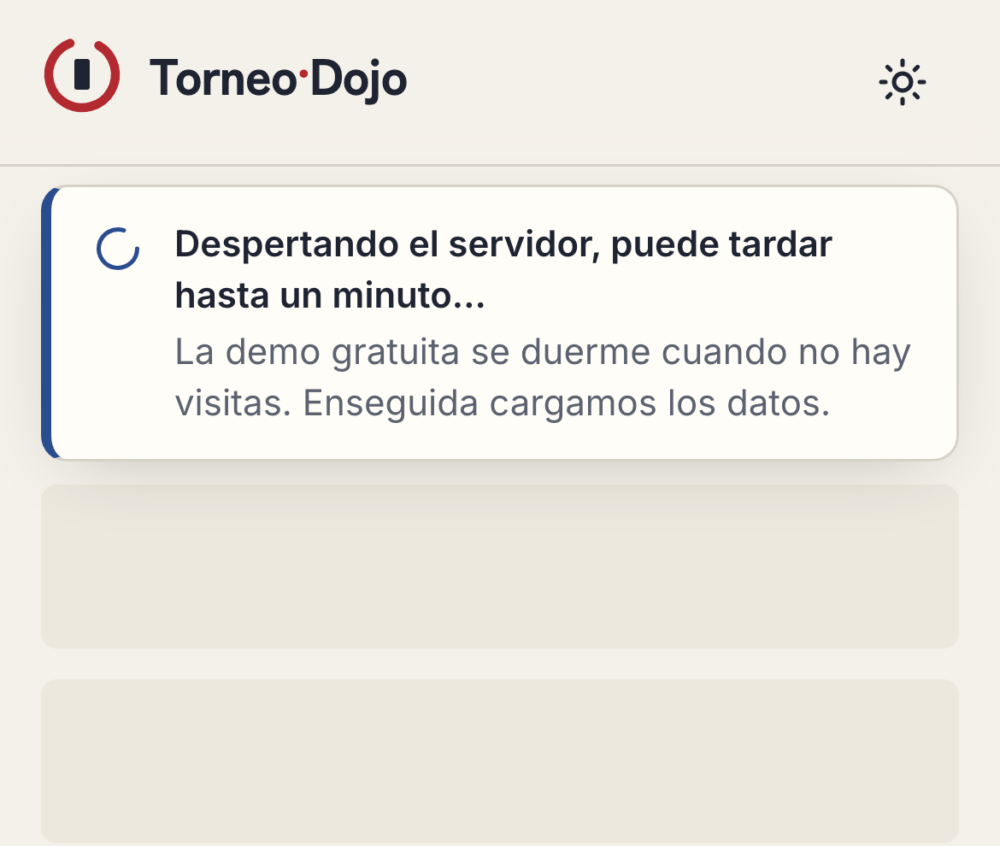
El aviso desaparece solo.
2.1Entrar en la aplicación
Abre en el navegador (Chrome, Safari, Edge o Firefox) la dirección que te dio la organización.
Verás la página de inicio con los torneos en curso. El público no necesita hacer nada más.
Si eres administrador o mesa, pulsa Entrar1 arriba a la derecha (en el teléfono, abajo).
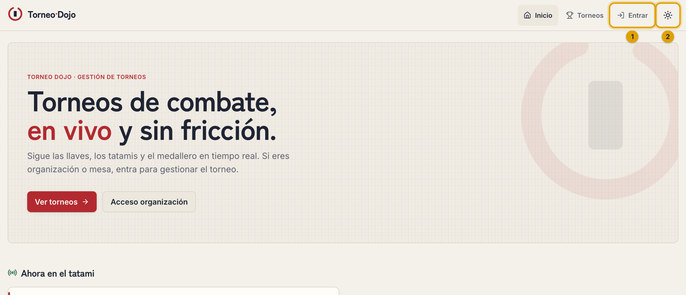
Página de inicio.1 Entrar, para administración y mesa. 2 Cambiar entre modo claro y oscuro.
2.2Iniciar sesión
Inicio de sesión. Correo 1, contraseña 2 y botón Entrar 3.
Escribe tu correo electrónico.
Escribe tu contraseña. Te la da quien administra el torneo.
Pulsa Entrar. Los administradores llegan al Panel y las mesas a la Mesa de control.
Si el correo o la contraseña no son correctos, aparece un aviso en rojo: revisa que no haya espacios ni mayúsculas de más.
Para salir, pulsa el icono de la puerta al pie del menú lateral (en el teléfono, en el menú ☰).
2.3Modo claro y modo oscuro
El botón del sol o la luna 2 cambia el aspecto de la aplicación. Cada pulsación pasa por:
Automático: sigue el ajuste de tu dispositivo.
Claro: fondo claro, ideal de día y para imprimir.
Oscuro: fondo oscuro, más cómodo en pabellones con poca luz o por la noche.
La elección se recuerda en ese dispositivo.
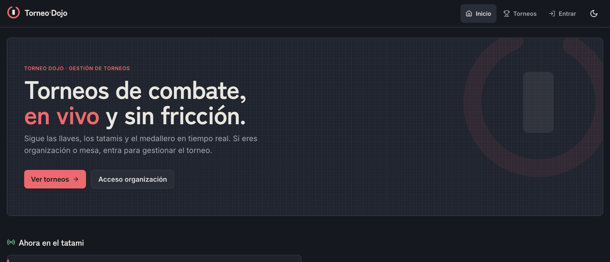
Modo oscuro. La misma página de inicio con el fondo oscuro.
2.4En el teléfono, la tablet y el ordenador
La aplicación se adapta sola al tamaño de la pantalla. Recomendamos:
Ordenador: para administrar. El menú queda a la izquierda.
Tablet: para la mesa de control, junto al tatami. Los botones son grandes y fáciles de tocar.
Teléfono: para el público y para consultas rápidas. El menú pasa a una barra inferior y, en administración, se abre con ☰.
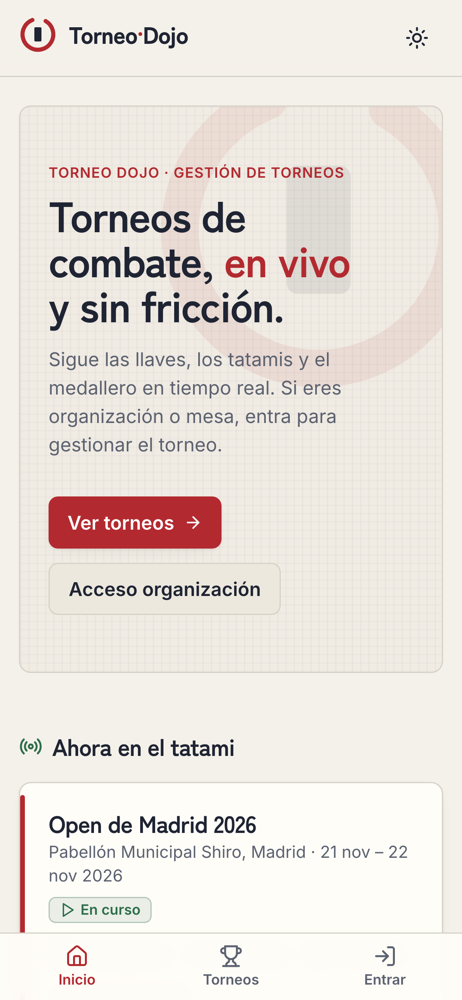
Teléfono
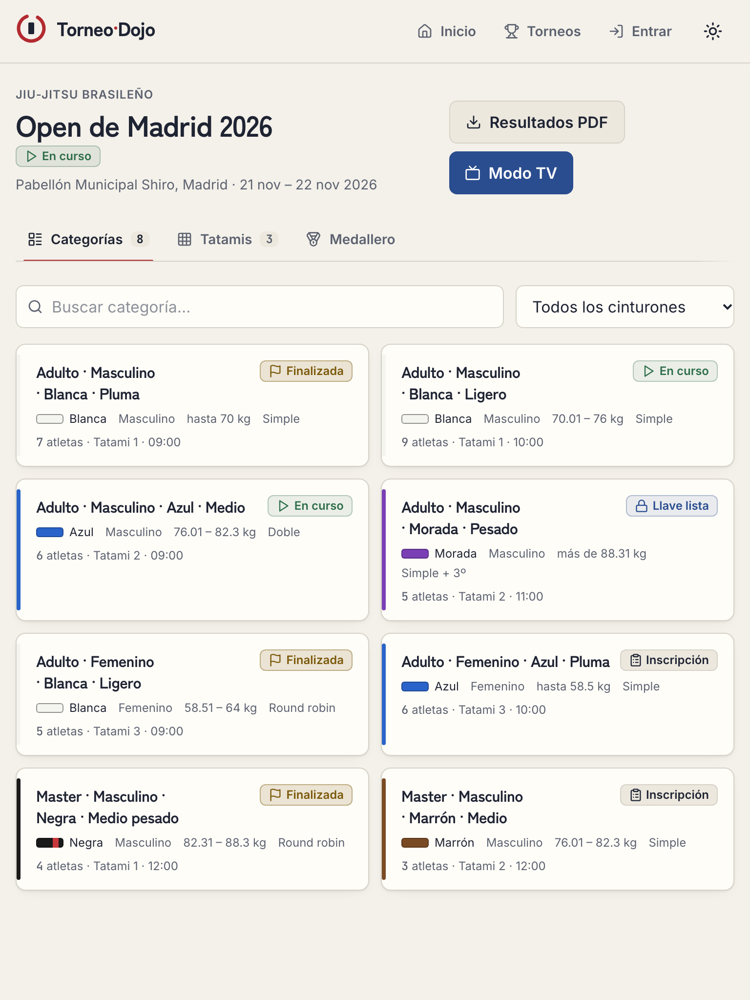
TabletOrdenador
3Guía del administrador
Todo lo necesario para preparar y dirigir un torneo, en el orden en que se hace.
El menú de la izquierda tiene las secciones generales (Torneos, Atletas, Academias, Deportes y Usuarios), que sirven para todos los torneos. Dentro de cada torneo hay pestañas para cada paso. Bajo las pestañas siempre hay una línea de ayuda que dice qué hacer ahí y qué viene después.
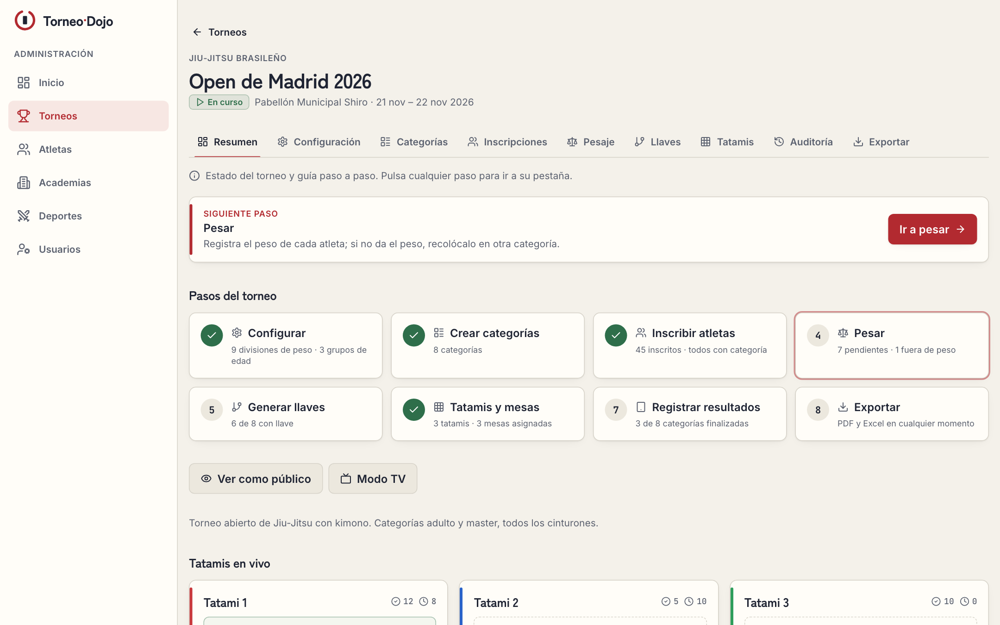
Resumen del torneo. Los pasos hechos llevan una marca verde y la tarjeta «Siguiente paso» te lleva a lo que falta.
3.1Configurar un deporte
El deporte define cómo se puede ganar un combate (métodos de victoria) y qué cinturones o niveles existen. Jiu-Jitsu Brasileño y Judo ya vienen preparados: normalmente solo tendrás que revisarlos.
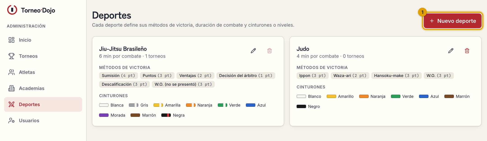
Deportes. Cada tarjeta muestra sus métodos de victoria y sus cinturones. 1 Nuevo deporte.
Entra en Deportes y pulsa Nuevo deporte, o el lápiz de uno existente para editarlo.
Escribe el nombre y la duración normal de un combate (en segundos).
En Métodos de victoria pulsa Añadir método1 por cada forma de ganar: Sumisión, Puntos, Ventajas… El número de la derecha son los puntos que vale, y solo se usan para desempatar en «todos contra todos».
En Cinturones / niveles pulsa Añadir cinturón2, escribe el nombre y elige su color. Puedes añadir una franja de otro color (como la punta roja del cinturón negro).
Pulsa Guardar.
Escribe los cinturones en orden, del más bajo al más alto: es el orden en que aparecerán en filtros y categorías.
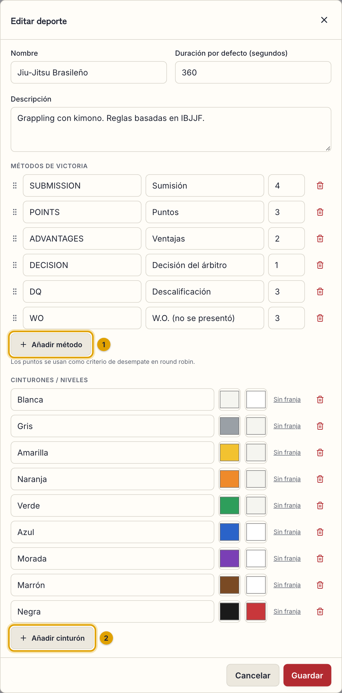
Editar deporte. Métodos de victoria arriba y cinturones abajo.
3.2Crear un torneo
En el menú, entra en Torneos y pulsa Nuevo torneo1.
Rellena el nombre, la sede, la ciudad y las fechas.
Elige el deporte. Después no se puede cambiar.
Deja el estado en Borrador mientras lo preparas: así el público todavía no lo ve.
Revisa los puntos del medallero (9 por oro, 3 por plata y 1 por bronce, si no los cambias).
Pulsa Crear torneo2.
Torneos.1 Nuevo torneo. Pulsa un torneo para gestionarlo.
Nuevo torneo con datos de ejemplo.
Pesos y edades del torneo
Antes de crear categorías, entra en el torneo y abre la pestaña Configuración:
Divisiones de peso: nombre (Pluma, Ligero…), kilos mínimo y máximo, y género. Deja el mínimo vacío para «hasta X kg» y el máximo vacío para «más de X kg» o un absoluto.
Grupos de edad: nombre (Juvenil, Adulto, Master…) y edades desde / hasta. La edad se calcula con el año del torneo menos el año de nacimiento.
Cuando el torneo esté listo para el público, cambia su Estado aquí mismo a Inscripción, Pesaje o En curso, y pulsa Guardar cambios.
Configuración. Datos del torneo a la izquierda y divisiones de peso a la derecha (los grupos de edad están debajo).
3.3Crear categorías
Una categoría es el grupo en el que compiten los atletas: edad × género × cinturón × peso, por ejemplo «Adulto · Masculino · Azul · Pluma». Hay dos formas de crearlas, en la pestaña Categorías:
Categorías.1 Generación asistida (muchas de una vez). 2 Nueva (una a una). A la derecha de cada fila: ver llave, editar y eliminar.
Muchas de una vez (recomendado)
Pulsa Generación asistida1.
Toca los grupos de edad, géneros, cinturones y pesos que quieras. Los marcados se ven en rojo.
Elige el formato por defecto de la llave (ver 3.6).
Pulsa Crear combinaciones. Se crea una categoría por cada combinación.
Cuando cierren las inscripciones, pulsa Limpiar vacías (aparece sobre la lista) para quitar las categorías sin atletas.
Una a una
Pulsa Nueva2, elige edad, género, cinturón, peso, formato y tatami, y guarda. El nombre se escribe solo.
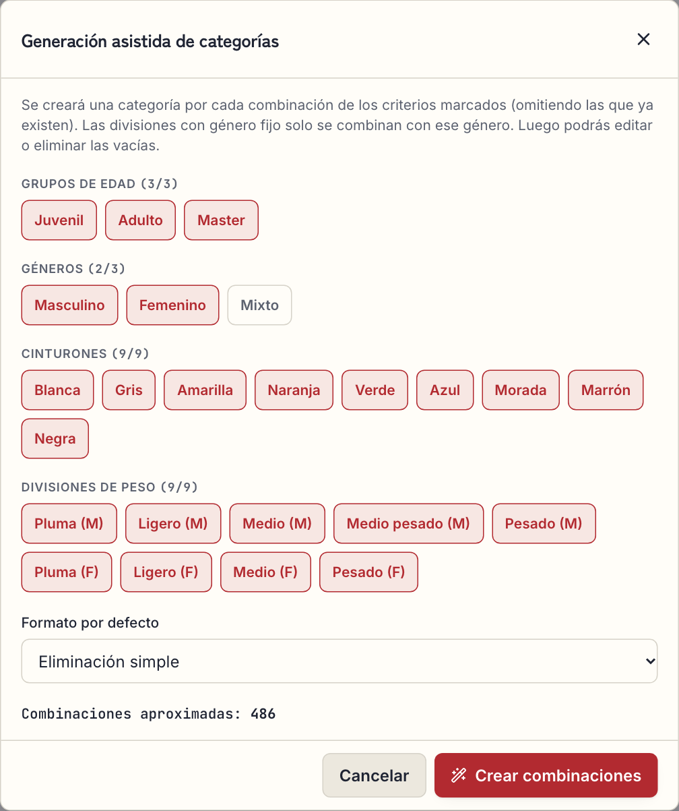
Generación asistida. Cada combinación marcada será una categoría.
3.4Registrar academias y atletas
Academias y atletas se guardan una sola vez y sirven para todos tus torneos.
Academias
En Academias pulsa Nueva academia y escribe su nombre, una abreviatura corta (aparece en la llave junto al atleta), la ciudad y un color. Si importas atletas desde Excel, las academias que no existan se crean solas.
Atletas uno a uno
En Atletas pulsa Nuevo atleta1 y rellena nombre, apellidos, documento, fecha de nacimiento, género, cinturón y academia. El documento no se puede repetir: así se evita registrar dos veces a la misma persona.
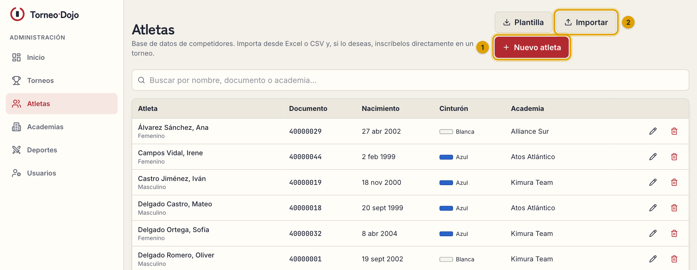
Atletas.1 Nuevo atleta. 2 Importar desde Excel. El botón Plantilla descarga un Excel de ejemplo.
Importar desde Excel
Pulsa Plantilla para descargar un Excel con las columnas correctas, y rellénalo (una fila por atleta).
Pulsa Importar2 y elige tu archivo (.xlsx, .xls o .csv).
Revisa la vista previa: cuántas filas hay y qué columnas se reconocieron.
Elige el deporte (para entender los cinturones) y, si quieres, el torneo en el que inscribirlos directamente.
Pulsa Importar N filas1.
Escribe las fechas como AAAA-MM-DD (1998-04-12) y el género como M o F. Si un documento ya existe, ese atleta se actualiza en lugar de duplicarse.
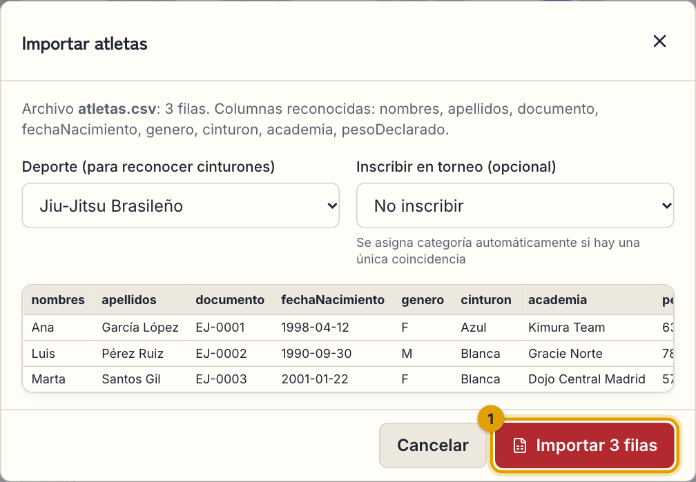
Vista previa de la importación. Nada se guarda hasta que pulsas Importar.
3.5Inscribir atletas y hacer el pesaje
Inscribir
Dentro del torneo, abre la pestaña Inscripciones y pulsa Inscribir.
Busca al atleta por nombre o documento y tócalo.
Escribe su peso declarado.
Deja la categoría en Automática: el sistema elige la que encaja por edad, género, cinturón y peso. También puedes elegirla tú.
Pulsa Inscribir1.
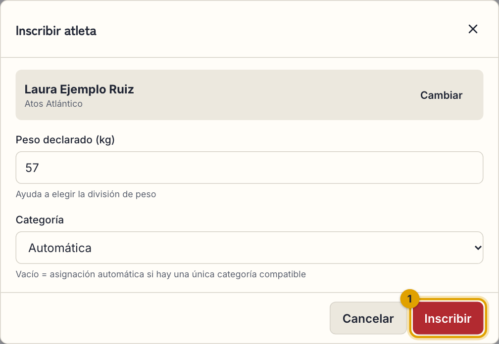
Inscribir atleta con categoría automática.
Si un atleta queda Sin categoría (porque encajan varias o ninguna), pulsa el lápiz de su fila y elige una. El botón Asignar automáticamente intenta resolver todos a la vez.
Pesaje
Abre la pestaña Pesaje y pulsa el filtro Sin pesar1 para ver solo a quien falta.
Pulsa Pesar2 en la fila del atleta.
Escribe el peso real y pulsa Registrar3.
Si da el peso, queda Apto. Si no, verás un aviso de Sobrepeso o Bajo peso con botones para pasarlo a una categoría que encaje, o para marcarlo como no apto.
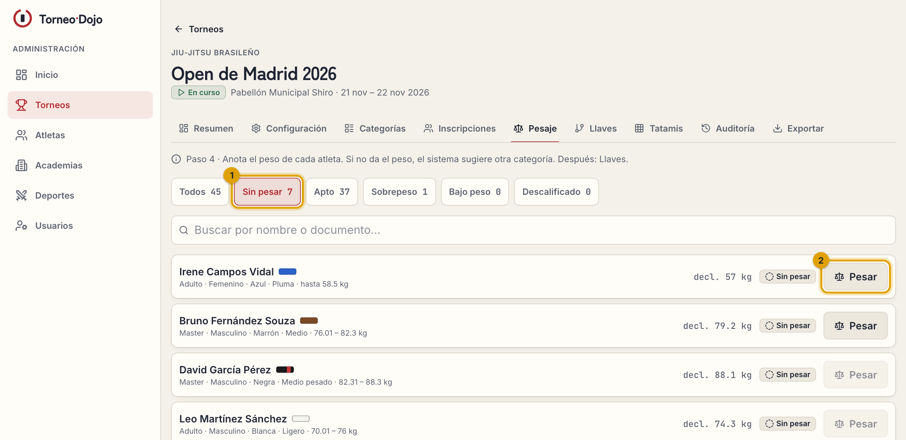
Pesaje.1 Filtro «Sin pesar». 2 Pesar al atleta. Arriba, cuántos hay en cada estado.Registrar el peso real.3 Registrar.
3.6Generar llaves
La llave es el cuadro de combates de una categoría. Cada categoría tiene uno de estos formatos:
Formato
Cómo funciona
Eliminación simple
Quien pierde queda fuera; los dos que pierden en semifinales se llevan el bronce.
Eliminación simple con bronce
Igual, pero los que pierden en semifinales luchan un combate por el tercer puesto (un solo bronce).
Doble eliminación
Hay que perder dos veces para quedar fuera: quien pierde pasa a la repesca y puede volver a la gran final.
Todos contra todos
Cada atleta lucha contra todos los demás y gana quien suma más victorias; ideal para grupos pequeños.
Abre la pestaña Llaves y elige la categoría en el desplegable.
Deja marcado Evitar misma academia para que dos compañeros no se crucen en la primera ronda.
Pulsa Generar por sorteo1 para un orden al azar, o Con siembra2 para separar a los favoritos según el número de siembra puesto en Inscripciones.
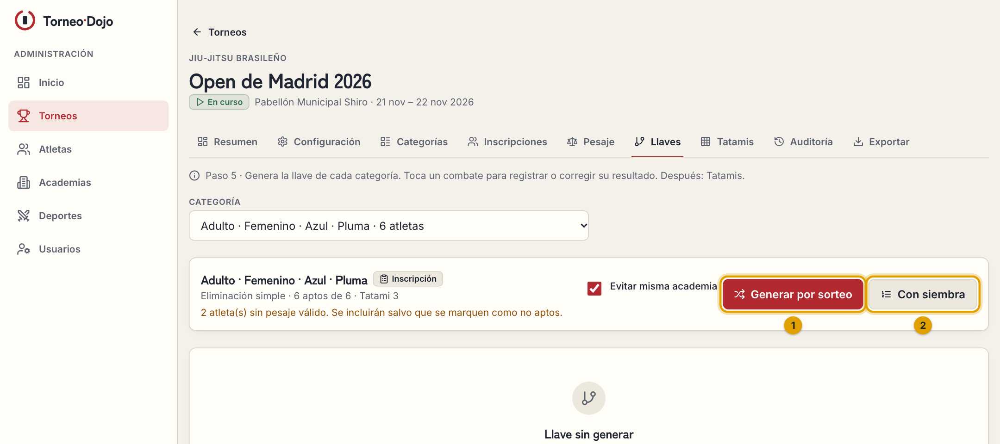
Categoría sin llave.1 Generar por sorteo. 2 Con siembra. El aviso naranja indica atletas sin pesar.
Si sobran huecos, algunos atletas pasan de ronda sin combatir (BYE). Mientras no haya empezado ningún combate puedes Regenerar o Eliminar la llave.
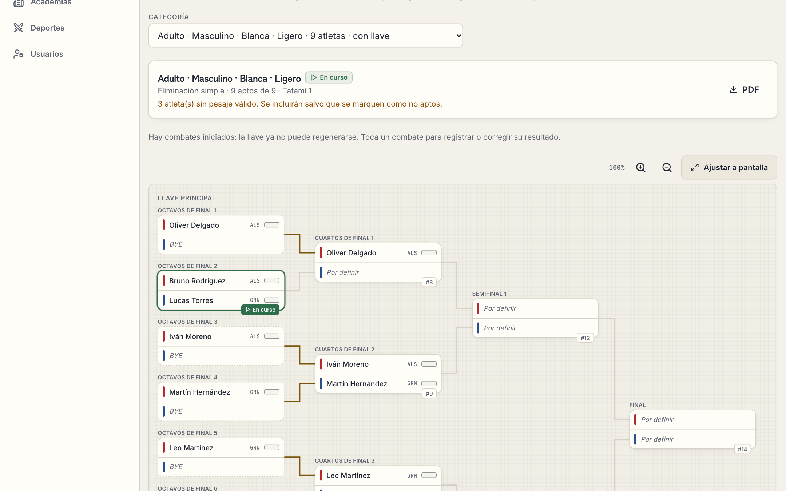
Llave generada. Rojo arriba, azul abajo; el ganador lleva un trofeo y el perdedor sale tachado. El combate con borde verde se está disputando ahora.
3.7Tatamis, horarios y usuarios de mesa
Crear los usuarios de mesa
En el menú, entra en Usuarios y pulsa Nuevo usuario.
Escribe el nombre, el correo y una contraseña (mínimo 6 caracteres).
En Rol elige Mesa de control.
Elige el torneo y marca los tatamis que podrá manejar. Pulsa Guardar.
Entrega a cada mesa su correo y contraseña. La casilla Usuario activo (al editar) bloquea una cuenta sin borrarla.
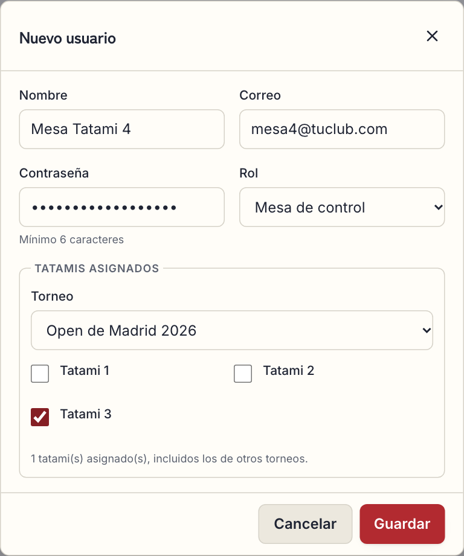
Nuevo usuario de mesa con el Tatami 3 asignado.
Tatamis y horarios
En el torneo, abre la pestaña Tatamis. Escribe el nombre del tatami y pulsa Añadir1.
Pulsa Asignar mesa2 y marca qué usuarios de mesa manejan ese tatami.
En Programación, elige para cada categoría su tatami y su hora. Ordénalas con las flechas ↑ ↓.
Pulsa Guardar programación3. Cada tatami recibe su cola de combates numerada (#1, #2…).
Tatamis.1 Añadir. 2 Asignar mesa. 3 Guardar programación (se activa al hacer un cambio).
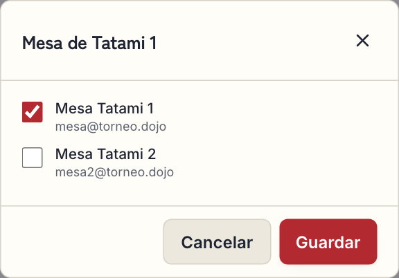
Asignar mesa al Tatami 1.
3.8Corregir un resultado
Normalmente la mesa anota y corrige sus propios resultados (capítulo 4). Como administrador también puedes corregir cualquier combate:
Abre la pestaña Llaves y elige la categoría.
Toca el combate que quieres corregir 1.
Elige el ganador correcto, escribe el motivo de la corrección y toca el método de victoria. Se guarda al momento.
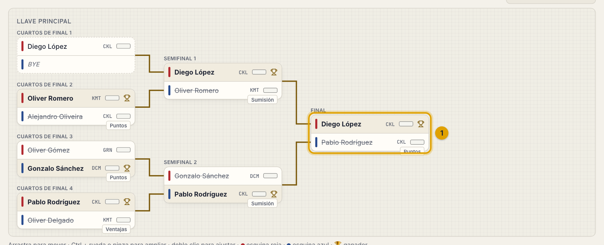
Llave de una categoría terminada.1 Toca el combate para corregirlo.
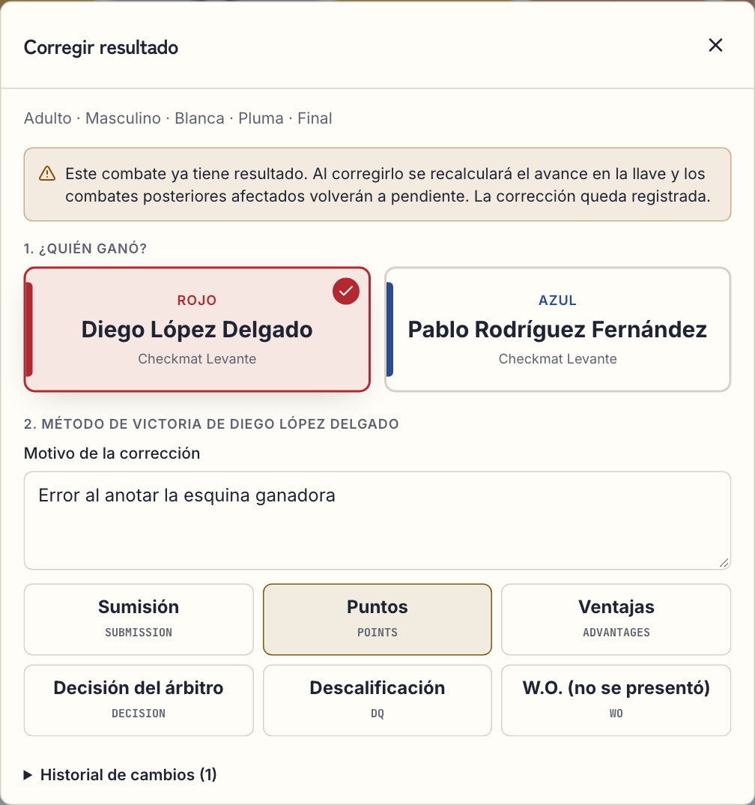
Corregir resultado. Ganador, motivo y método.
Qué pasa al corregir
La llave se recalcula: si el ganador cambia, los combates siguientes en los que participaba vuelven a pendiente para disputarse de nuevo.
Todas las correcciones quedan guardadas (quién, cuándo, qué cambió y por qué) en la pestaña Auditoría.
Para borrar un resultado sin poner otro, usa Anular un resultado, debajo de la llave.
3.9Medallero y exportar a PDF y Excel
Medallero
El medallero se calcula solo a medida que terminan las categorías. Ordena a las academias por puntos (9 por oro, 3 por plata y 1 por bronce, o lo que configuraste) y, debajo, muestra el podio de cada categoría. Para verlo, en el Resumen del torneo pulsa Ver como público y abre la pestaña Medallero.
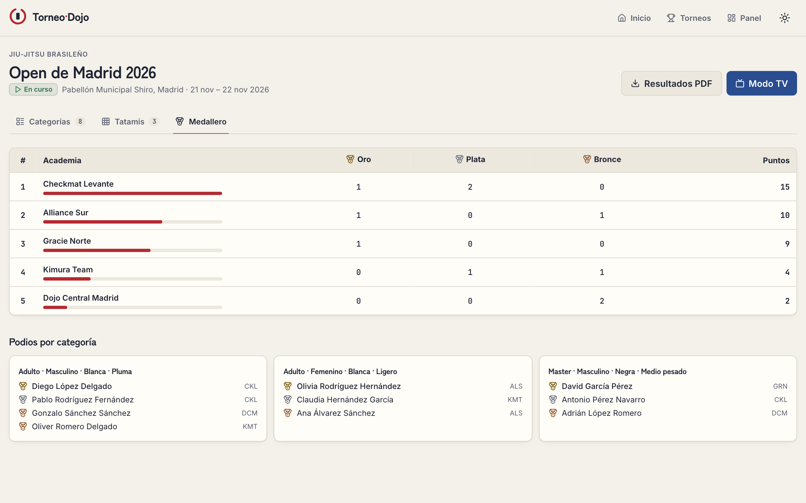
Medallero por academias. Arriba a la derecha: Resultados PDF y Modo TV.
Exportar
En la pestaña Exportar pulsa Descargar en el documento que necesites:
Documento
Qué contiene
Participantes por categoría (PDF)
Inscritos con academia, cinturón y pesaje.
Horarios por tatami (PDF)
Qué categoría va en cada tatami y a qué hora.
Resultados y medallero (PDF)
Medallero por academias y podios.
Llave de una categoría (PDF)
La llave dibujada, lista para imprimir y colgar.
Libro Excel completo
Participantes, categorías, resultados, medallero y podios. Incluye datos de contacto: solo lo descargan los administradores.
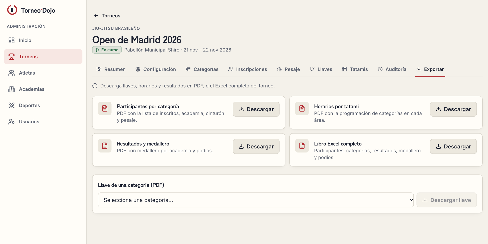
Exportar. Cada tarjeta descarga un documento.
4Guía de la mesa de control
Para la persona que anota junto al tatami. Pensada para una tablet: botones grandes y uno o dos toques por resultado.
Elegir tu tatami
Al entrar con tu cuenta de mesa verás solo los tatamis que tienes asignados. Toca el tuyo. Si no aparece, pide al administrador que te lo asigne (sección 3.7).
Elegir tatami. La mesa solo ve los suyos.
Iniciar un combate
En Siguientes combates está la cola del tatami, en orden (#6, #7…).
Cuando los atletas suban al tatami, pulsa Iniciar1.
El combate pasa a Combate en curso y el público lo ve «En curso» al momento.
¿Lo iniciaste por error? Pulsa No iniciado y vuelve a la cola. El botón ✓ registra un resultado sin iniciar el combate.
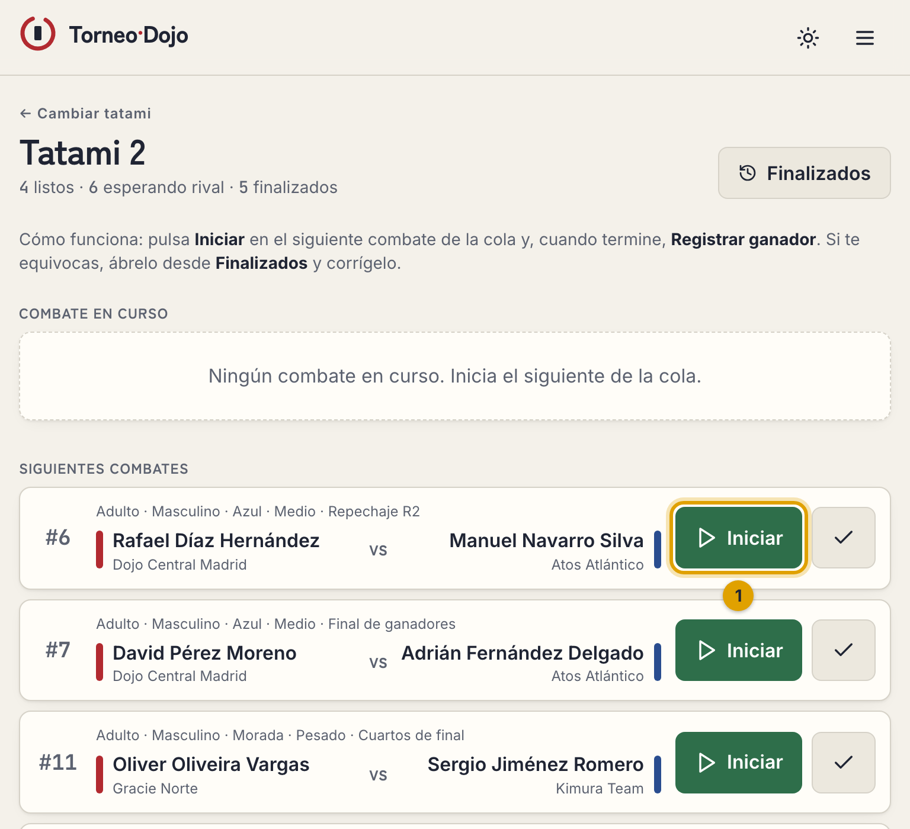
Tatami sin combate en curso.1 Iniciar el siguiente.
Registrar el ganador y el método
Combate en curso.1 Registrar ganador al terminar.
Cuando termine el combate, pulsa Registrar ganador1.
Toca la tarjeta del atleta que ganó: Rojo o Azul.
Toca el método de victoria (Sumisión, Puntos, Ventajas…). Se guarda al instante, no hay que pulsar nada más.
El ganador avanza solo en la llave y el siguiente combate queda listo para iniciar.
Fíjate bien en el color de la esquina: la franja roja o azul de cada tarjeta es la misma que en el tatami.
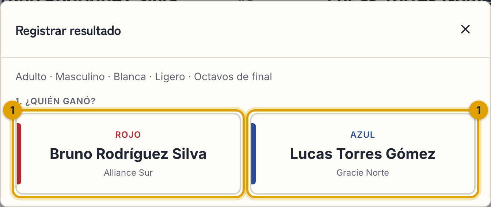
Paso 1.1 Toca al ganador.
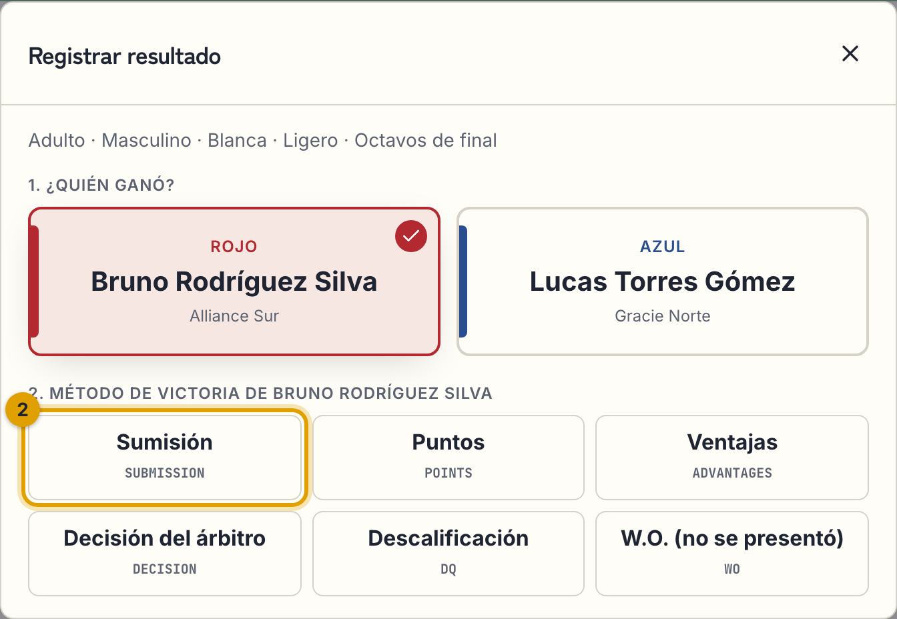
Paso 2.2 Toca el método y se guarda.
Corregir un resultado
¿Anotaste mal un ganador o un método? Se arregla en segundos:
Pulsa Finalizados, arriba a la derecha.
Baja hasta Finalizados (toca para corregir) y toca el combate 1.
Elige el ganador correcto y escribe el motivo (por ejemplo: «error al registrar la esquina»). Es obligatorio.
Toca el método de victoria. La corrección se guarda y la llave se actualiza.
Combates finalizados.1 Toca el que quieras corregir.
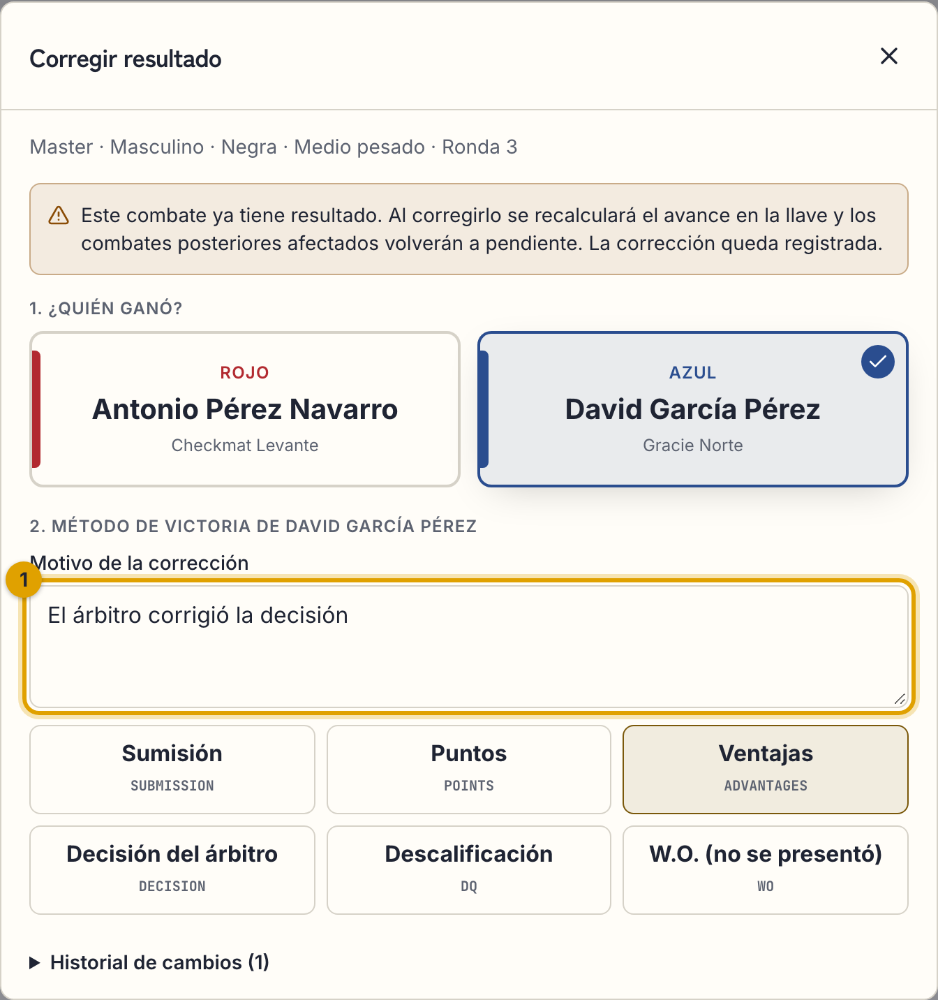
Corregir resultado.1 Motivo de la corrección.
Si el ganador cambia, los combates siguientes en los que participaba vuelven a pendiente y habrá que disputarlos de nuevo. Cada corrección queda registrada.
5Vista pública
Lo que ven atletas, familias y entrenadores, sin cuenta. Todo se actualiza solo cada pocos segundos: no hace falta recargar.
Ver torneos
En el Inicio aparecen los torneos en curso («Ahora en el tatami») y, en Torneos, todos los publicados. Toca uno para abrir su ficha. Los torneos en Borrador no se muestran al público.
Torneos publicados.
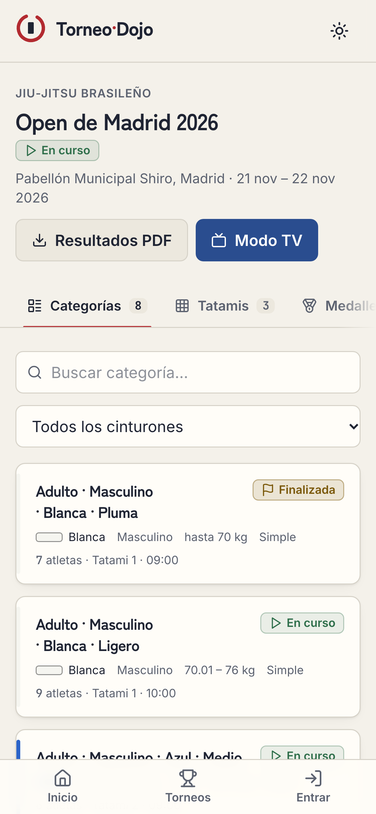
Ficha del torneo: categorías con buscador y filtro por cinturón.
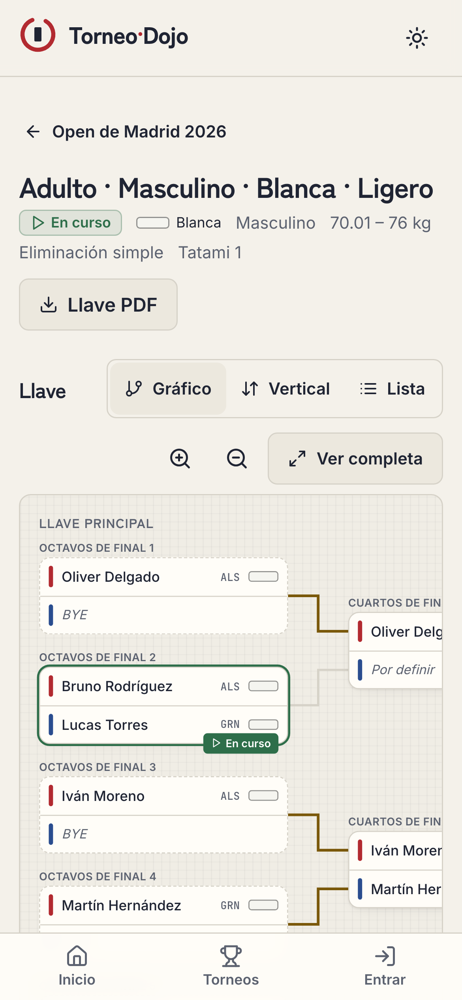
Llave en vivo. El combate en curso lleva borde verde.
Llaves en vivo
Toca una categoría para ver su llave. En el teléfono, desliza de lado para avanzar de ronda y pellizca para ampliar; Ver completa la encaja entera.
Los botones Gráfico, Vertical y Lista cambian la forma de verla. La lista es la más rápida de leer en pantallas pequeñas.
Cuando la categoría termina, arriba aparece el podio. Llave PDF la descarga para imprimir.
Horarios, tatamis y medallero
En la ficha del torneo, las pestañas de arriba muestran:
Categorías: cada una con su tatami y su hora prevista.
Tatamis: qué combate se está disputando ahora en cada tatami y cuáles vienen después.
Medallero: la clasificación por academias y los podios de cada categoría.
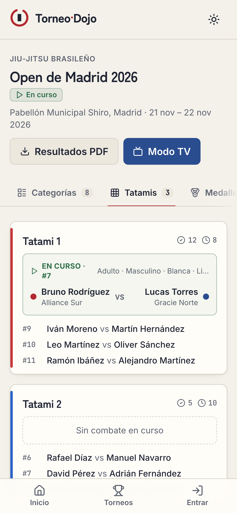
Tatamis: combate en curso y cola.
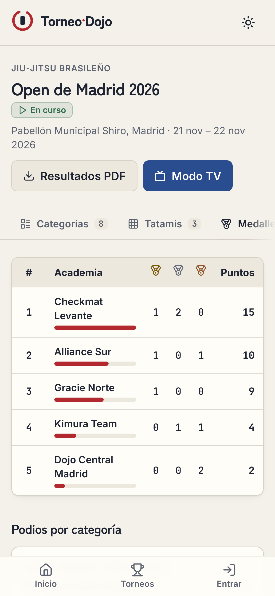
Medallero por academias.
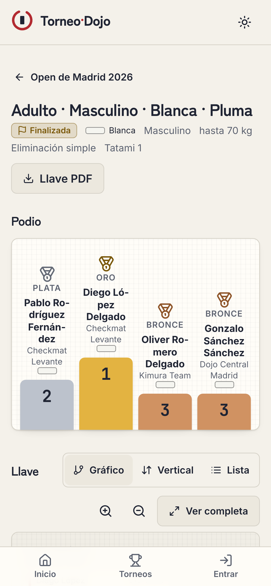
Podio de una categoría terminada.
Modo TV
Pensado para una pantalla grande o un proyector en el pabellón. En la ficha del torneo pulsa Modo TV: la pantalla alterna sola cada 20 segundos entre los tatamis en vivo y el medallero.
Pulsa el botón de pantalla completa (arriba a la derecha) para ocultar todo lo demás.
Modo TV. Tatamis en vivo con el reloj; los puntos de abajo indican la página que se muestra.
6Preguntas frecuentes y solución de problemas
Las dudas más habituales y cómo resolverlas.
No puedo generar la llave
Hacen falta al menos 2 atletas aptos en la categoría. Revisa en Pesaje que no estén descalificados.
Si algún combate ya empezó, la llave no se puede regenerar. Corrige los resultados uno a uno (3.8).
Un atleta no aparece en su categoría
En Inscripciones, busca al atleta: si pone Sin categoría, pulsa el lápiz y elige la suya.
Comprueba sus datos en Atletas: fecha de nacimiento, género y cinturón deciden la categoría.
Si la categoría ya tiene llave, no admite más atletas: elimina la llave (si no empezó ningún combate), inscríbelo y genérala de nuevo.
Me equivoqué al registrar un ganador
Desde la mesa: Finalizados → toca el combate → elige el ganador correcto, escribe el motivo y toca el método (capítulo 4). Como administrador, también desde la pestaña Llaves (3.8).
La página tarda en cargar
Si nadie la ha usado en un rato, el servidor se está despertando: espera hasta un minuto y los datos aparecerán solos. Si pasado ese tiempo ves «El servidor aún no responde», pulsa Reintentar y revisa tu conexión a internet.
Pulsé «Iniciar» en el combate equivocado
Pulsa No iniciado en el combate en curso. Vuelve a la cola sin resultado y puedes iniciar el correcto.
La mesa no ve su tatami
El administrador debe asignárselo: pestaña Tatamis → Asignar mesa, o en Usuarios editando ese usuario. Comprueba también que el usuario esté activo.
El público no ve mi torneo
Los torneos en Borrador están ocultos. En la pestaña Configuración, cambia el estado a Inscripción, Pesaje o En curso y pulsa Guardar cambios.
El botón «Pesar» está gris
La categoría de ese atleta ya tiene la llave generada, así que su peso no puede cambiar. Si necesitas pesarlo de nuevo, elimina primero la llave (pestaña Llaves) y vuelve a generarla después.